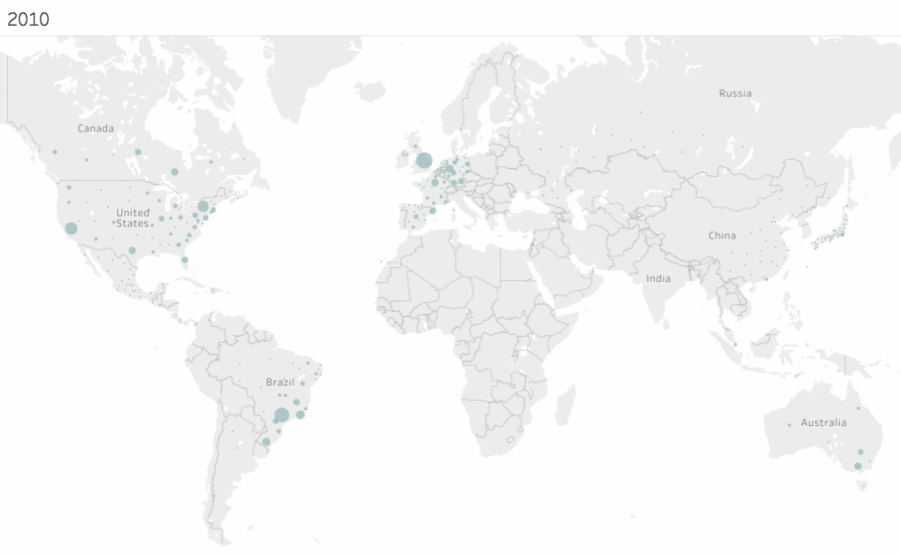

How does it become Trending?
Trend around the world
2016 is considered as the year of the Bomber Jacket. No longer confined by its military roots, the bomber is now a true fashion essential, one found draped across the shoulders of nearly everyone who gives any thought to what they wear.
How the bombers spread out across time and places around the world becomes the main interest here. To analyze the trend, searches for bombers is considered as a good indicator, and the data is available from Google Trends.
Search data is retrieved from Nov 2010 to Mar 2016 for 1933 different cities. 8 different languages (as shown in the word cloud on the right) were used to pull data for different regions. The data is then normalize using search categories.
The animated visulization below shows how search trend changes across the world.
Search Trends by City (Nov 2010 - Mar 2016)

A Closer Look at the Trend